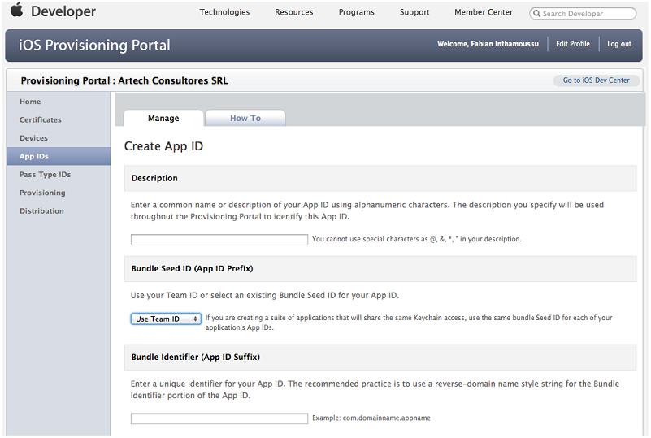

This property returns an acceptable client identifier in both platforms: WEB and SD. Smart Devices appsIn some Smart Devices apps, it is important to identify the device (SD) that is used. Some examples of this are:
It would be best to know the equivalent to the device’s "serial number" or MAC Address, a feature that makes it one and only, but it’s not so easy. Despite the fact that all devices include some kind of unique identification that is accessed through software, it is due to privacy reasons that it will not be "for use", and access to it might even be forbidden (iOS). The ClientInformation.Id property provided in ClientInformation API external object (X Evolution 3) counteracts this situation with acceptable device identification mechanisms whose implementations have a common base and variations for the different platforms. The value of ClientInformation.Id is:
The same criteria of a GUID (UUID) applies. Two devices may return the same value of ClientInformation.Id in any of the following situations:
In Android, any GX application installed on a device will return the same value (see exception in Annex below). In iOS, it is possible for the same device to return different values of ClientInformation.Id depending on the application (see Annex below). In sum:
Web ApplicationsIn the case of Web applications, the ClientInformation.Id property returns an identifier for the user, which is persistent in all the sessions unless the final user deletes the cookies of the browser. The ClientInformation.Id remains the same for the same application and browser because it's saved on a cookie with the maximum expiration date. It identifies the browser where the user access to the application. One use case is the following, where the user is identified using the ClientInformation.Id called in the Start Event of a web panel. Then, that information is persisted in the database and used by another web panel which sends a web notification for that particular user.
Event Start
&clientId = ClientInformation.Id
//save the information of the client: RegisteredClientId = &clientId//
Endevent
In the procedure that sends the notification, we get the ClientInformation.Id (that may have been saved in the database). The Notifyclient method is executed by passing the ClientInformation.Id as a parameter, so only that client will receive the message. &ClientId = RegisteredClientId //ClientInformation.Id of the user, retrieved from the database &NotificationInfo.Id= &Id &NotificationInfo.Message= &MyMessage &webnotification.NotifyClient(&ClientId, &NotificationInfo) Download sample from here AnnexesAndroidThe value of ClientInformation.Id is a GUID generated from the device’s internal identifier. This guarantees, at least, that its value will be the same between two applications installed on the same device during the life of the device. The known exceptions are:
Since we stored the GUID generated, the applications installed before the rooted will return an ID value while those installed after the rooted will probably return a different one. But the value returned by the same application will not change.
This number is known and in such case we generate a random GUID (per application). See this response in stackoverflow for a detailed explanation. The solution proposed is practically the same as the one we are using, except that we do not consider the IMEI for generating the GUID (because to do that we would need to have special permits). iOSThe value of ClientInformation.Id is a GUID that we calculate at the time of installing the first GX application on the device. The value is stored in what is known as "Keychain" and it is maintained even when the application that created it is uninstalled and installed again. In iOS, each application has its own "Keychain", though it is possible to share the same one among several applications. To ClientInformation.Id effects a shared keychain means that all applications with the same Keychain will return the same value of ClientInformation.Id for a given device. With no shared keychain, each application installed on a device will return a different value of ClientInformation.Id. The value of ClientInformation.Id may change when a factory reset is done or when the firmware is restored (reinstalls the Operating System), and also if NO security copy is restored. An example of this is when the device is passed on to a different person (when sold for example). It is possible for several devices to have the same value of ClientInformation.Id when a security copy is restored on several devices. This case may occur when a device is replaced with a newer model and a security copy of the old device is restored in the new one. How to obtain the same value of ClientInformation.Id for several applications from the same providerTo achieve this we need to make a change in implementation and also the GX user must be aware that it is possible to control this behavior. Which applications are shared and which not will depend on the user’s decision. The unique identifier in an application in iOS (Application ID) consists of two parts: <Bundle Seed ID>.<Bundle Identifier>. The Bundle Seed ID is a chain with 10 unique characters, unique in the whole App Store, and it is generated by Apple. The Bundle Identifier is a chain of characters that must be unique among the same provider’s applications, and in GX it is configured with a property with the same name in the Main. For two (or more) applications from the same provider to return the same value of ClientInformation.Id on the same device, they _must_ have the same value of Bundle Seed ID. Because the Bundle Seed Id _maynot_ be changed after an application has been published, it is VERY IMPORTANT to be aware of this particular functioning. Fortunately, the default value when a new App ID is created on the Apple site (developer.apple.com) is that the Bundle Seed ID be shared by all apps (see combo at "Use Team ID"): 
|
| Backlinks | |
| ClientInformation external object | |
| HowTo: Receiving and processing a notification message from an external app | Server.Socket external object |